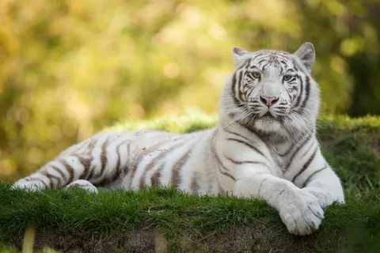
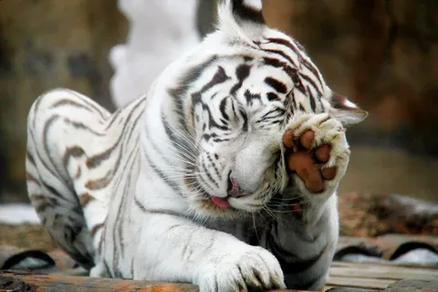
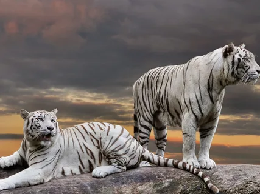

Всё о белом тигре
Белый тигр не считается в наше время отдельным подвидом в силу того, что этот факт является результатом природных мутаций. В результате генных мутаций на свет появляются особи, почти белого цвета с наличием темного, практически черного рисунка, при этом цвет глаз у них либо голубой, либо зеленый.
Описание
Если говорить о чистой белой окраске различных представителей животного мира, то они в природе встречаются крайне редко. Белые тигры появляются в природе также редко, при этом на 10 тыс. особей приходится всего одна особь белого цвета. На протяжении многих лет с разных уголков земного шара появляются сообщения о встрече с белыми тиграми.
Внешний вид
У белого тигра цвет шерстяного покрова чисто белый с наличием контрастных темных полос, которые формируют на теле животного уникальный рисунок для каждой особи. Столь необычная расцветка появилась в результате врожденных генных мутаций. Как правило, в основном цвет глаз таких необычных особей голубой, хотя встречаются особи с зеленым цветом глаз. Как и у обычных тигров, у белых тигров сильное, гибкое тело, отличающееся наличием мощной мускулатуры. Следует отметить, что белые тигры характеризуются меньшими размерами, по сравнению с тиграми, окрас тела которых традиционный.Голова белого тигра характеризуется явно выраженной округлой формой, при этом лицевая часть выступающая, а лобная часть заметно выпуклая. Черепная коробка сравнительно крупная и массивная, с широко расположенными скулами. Вибриссы у этого хищного животного длиной до 15 см и толщиной до полутора миллиметров. Цвет их чисто белый и располагаются они в 5 рядов. У взрослых особей можно насчитать до 3-х десятков больших и крепких зубов, при этом, пара клыков наиболее развитые, длиной до 8-ми сантиметров.У белых тигров не столь большие уши округлой формы. На языке хищника имеются своеобразные выпуклости, за счет которых хищник легко отделяет мясо от кости, а также умывается. Задние конечности вооружены 4-мя пальцами, а передние – 5-ю пальцами, которые отличаются наличием когтей втяжного типа. Взрослый белый тигр, в среднем весит до полтонны, при длине тела порядка 3-х метров.